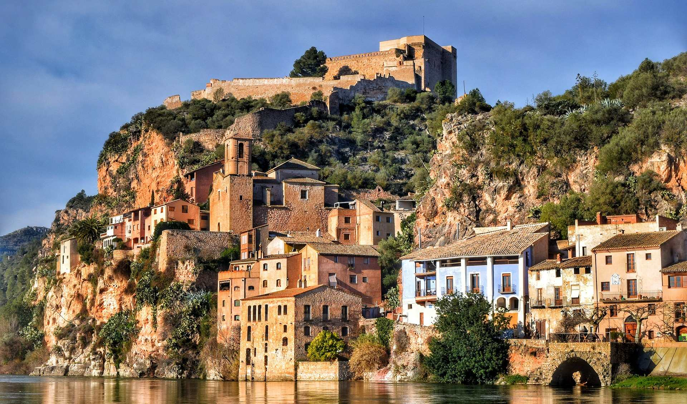

Испания — страна разнообразная и многогранная, даже официально она разделена на автономные регионы. Каталония, которая уже много лет не теряет надежды отделиться от страны, знаменита своей столицей Барселоной с ее городскими пляжами и архитектурой Гауди.
Южный регион — Андалусия — считается самой «испанской» Испанией. Здесь можно увидеть запрещенную в Каталонии корриду, фламенко и древние самобытные испанские города с историей: Севилью, Гранаду и родину Антонио Бандераса — Малагу.
Валенсия знаменита своими самыми широкими в стране песчаными пляжами, а также аутентичной паэльей, куда добавляют фасоль. Ну, а в Стране Басков непременно стоит посетить Бильбао с его музеями и ресторанами, пляжно-серферский Сан-Себастьян и маленькие портовые городки на побережье, куда редко добираются другие туристы.
